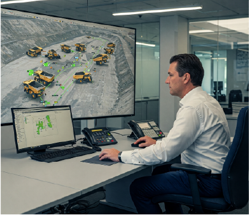

Curso Online de Controlador de Terreno (Operador de Camión de Extracción a Distancia) en Iquique
En Anupro360, con sede en Iquique, ofrecemos programas de formación especializados para la industria minera de la región de Tarapacá y más allá. Nuestro curso de Controlador de Terreno (Operador de Camión de Extracción a Distancia - CAEX) es 100% online y utiliza metodologías innovadoras para asegurar una formación de alta calidad, accesible desde Iquique.
Curso de Controlador de Terreno (Operador de Camión de Extracción a Distancia - CAEX) Online
Este curso está diseñado para profesionales en Iquique y otras regiones que buscan especializarse en la supervisión y gestión remota de camiones de extracción autónomos, una tecnología clave en la minería moderna. A través de este programa online, desarrollarás las competencias necesarias para inspeccionar, monitorear y optimizar la operación de flotas de camiones autónomos desde una sala de control en Iquique o cualquier otra ubicación. Los contenidos clave incluyen:
- Supervisión y control remoto de flotas: Monitoreo en tiempo real de las condiciones operativas y el desempeño de los camiones autónomos.
- Inspección preoperacional en operaciones autónomas: Procedimientos de verificación exhaustivos antes, durante y después de la operación para garantizar un rendimiento óptimo y seguro.
- Seguridad y normativas en minería automatizada: Identificación y gestión de riesgos, y aplicación de protocolos de seguridad específicos para la operación remota de CAEX.
- Gestión de datos y toma de decisiones con Power BI: Utilización de Power BI para el análisis de métricas operacionales, generación de informes y optimización del desempeño de la flota autónoma.
Este curso online está especialmente orientado a operadores, supervisores y técnicos de la industria minera en Iquique y otras zonas mineras que desean adaptarse a las tecnologías de automatización y mejorar su perfil profesional en un sector en constante evolución.
Modalidades de Estudio Online
El curso tiene una duración de 2 meses, con opciones de pago flexibles divididas en dos cuotas. Las clases inician 5 días hábiles después de la confirmación del primer pago. ¡Elige la modalidad que mejor se adapte a tus necesidades de aprendizaje online desde Iquique!
-
Modalidad Mixta (Teams + Aula Virtual)
- Clases en vivo online a través de Microsoft Teams con un docente experto, 2 días a la semana a elección del alumno (lunes a viernes).
- Acceso completo a materiales de estudio interactivos y evaluaciones en nuestra plataforma de aula virtual.
- Valor: USD $1080 (Aproximado)
- Descuento especial para nuestra comunidad online: ¡Inscríbete dentro de los próximos 3 días y si nos sigues en TikTok, obtén un 50% de descuento! Precio final: USD $540 (Aproximado).
-
Modalidad 100% Aula Virtual
- Acceso las 24 horas a todos los contenidos de estudio, evaluaciones y soporte del docente a través de nuestra intuitiva plataforma virtual.
- Valor: USD $857 (Aproximado)
- Descuento exclusivo para seguidores de TikTok: ¡Por tiempo limitado (3 días), disfruta de un 50% de descuento! Precio final: USD $429 (Aproximado).